Baixa de Abastecimentos
Baixa de Abastecimentos para o CONSUMIDOR PADRÃO
Na tela inicial do Frente de Caixa selecione o botão VENDER POR CUPOM FISCAL (F8)
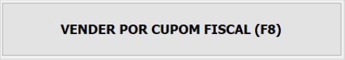Na tela ABASTECIMENTOS selecione com a barra de espaço do teclado os abastecimentosque deseja baixar manualmente. Em seguida selecione o botão BAIXA (F4).

Observe que em momento algum o cliente foi escolhido e o sistema começa a totalizar o cupom para o CONSUMIDOR PADRÃO.
Nesta fase você pode incluir mais abastecimentos, itens não combustíveis ou cancelar a venda iniciada.
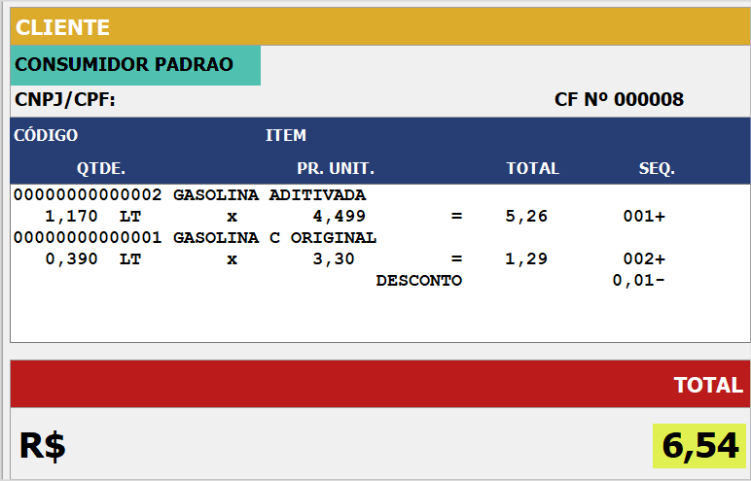Prossiga para o recebimento da venda selecionando o botão RECEBER (F10)

Escolha agora o Tipo de Recebimento conforme as opções disponíveis no painel à direita
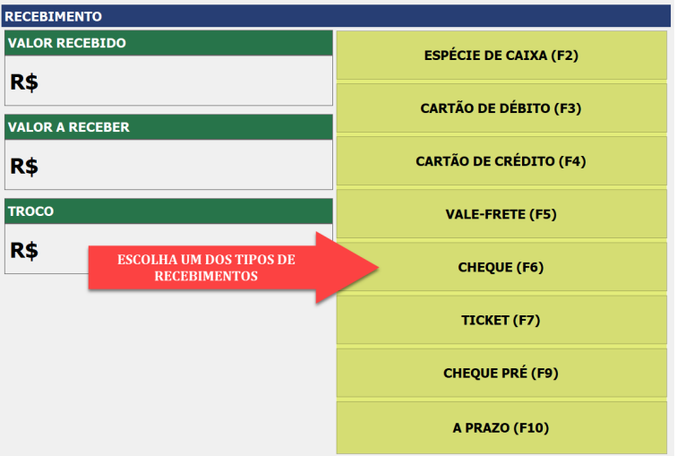Na janela Valor a Receber o sistema mostra o valor a receber da venda.
Se desejar lançar o troco (no caso do Dinheiro), informe um valor maior que tenha recebido do cliente. Pressione o botão F2 - OK
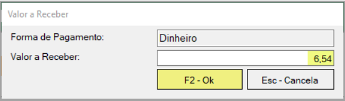Após informar o valor do recebimento o cupom é finalizado e mostra se existe troco na venda ou não.
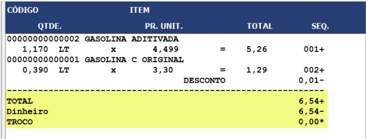Baixa de Abastecimento para CLIENTE IDENTIFICADO
A venda para um CLIENTE IDENTIFICADO pode ocorrer de dois modos: 1. Inclusão do cliente ANTES de iniciar a baixa do abastecimento; 2. Inclusão do cliente APÓS iniciar a baixa do abastecimento.
Inclusão do Cliente ANTES de Iniciar a Baixa do Abastecimento
Na janela ABASTECIMENTOS pressione o botão SELECIONAR CLIENTE (F2).
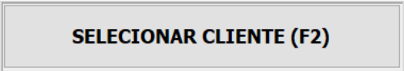Na janela Seleção de Cliente digite no campo Nome o nome do cliente ou digite o símbolo %NOME_CLIENTE para filtrar a busca. Por fim, pressione o botão F2 - Seleciona.
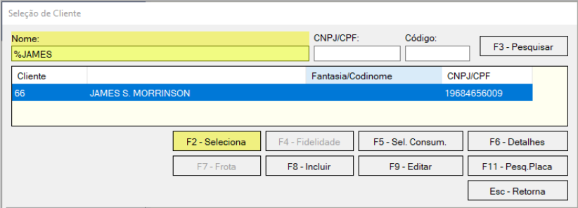Perceba que no canto superior esquerdo o cliente escolhido já foi colocado no cabeçalho do cupom. Nesta fase você ainda pode mudar o nome do cliente bastando pressionar novamente o botão SELECIONAR CLIENTE (F2).
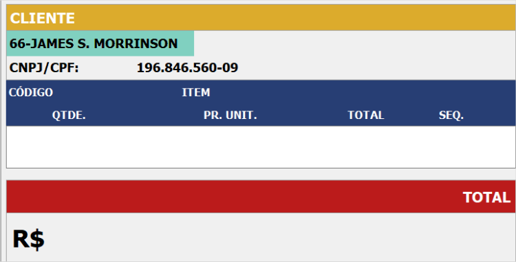Agora na tela ABASTECIMENTOS selecione com a barra de espaço do teclado os abastecimentos que deseja baixar manualmente. Em seguida selecione o botão BAIXA (F4)
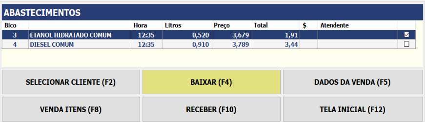Após pressionar o botão BAIXA (F4) vem a janela Dados da Venda e nela você pode editar os dados do veículo, tais como Placa, Odômetro, Quilometragem e Motorista para imprimir no Cupom.
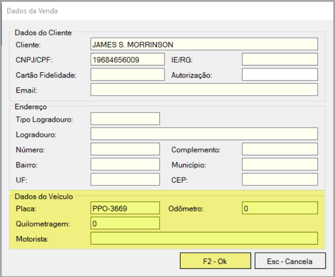O cupom começa a ser totalizado. Aqui você pode incluir mais abastecimentos, itens não combustíveis ou cancelar a venda iniciada.
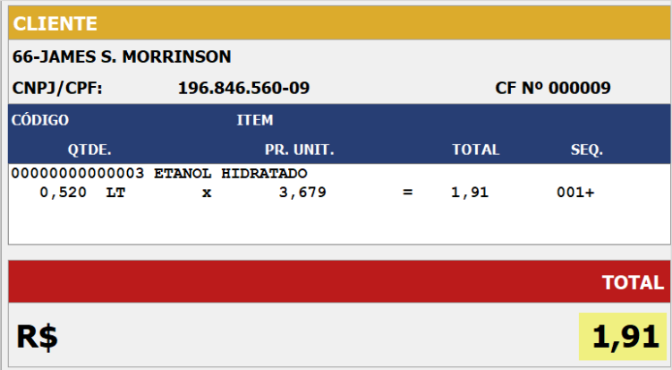Prossiga para o recebimento da venda selecionando o botão RECEBER (F10).
Escolha agora o Tipo de Recebimento conforme as opções disponíveis no painel à direita
Na janela Valor a Receber o sistema mostra o valor a receber. Se desejar lançar o troco (no caso do Dinheiro), informe um valor maior que tenha recebido do cliente. Pressione o botão F2 – OK
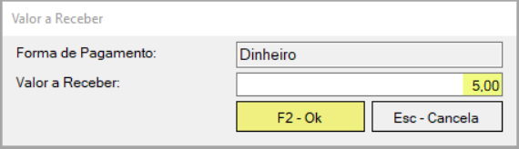Após informar o valor do recebimento o cupom é finalizado e mostrando se existe troco ou não.
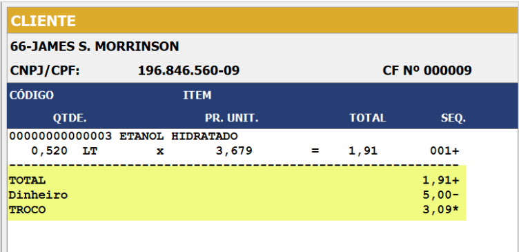Baixando Abastecimento para CLIENTE A PRAZO
A venda para o CLIENTE A PRAZO é a simples escolha de um tipo de recebimento A
PRAZO no momento em que for baixar a venda.
O CLIENTE A PRAZO possui um cadastro prévio onde é preciso limite de crédito com
validade, saldo positivo e não ter débitos na empresa.
Os tipos de recebimentos A PRAZO mais comuns são:
NOTA A PRAZO: Neste tipo de recebimento o cliente assina uma nota para
pagamento mensal, quinzenal ou no prazo acordado com o cliente;
CARTA-FRETE: A carta frete ou vale frete é um documento de frete que o
motorista de transportadora usa no posto, consumindo parte do valor da carta e
recebendo o restante em cheque troco.
Na janela ABASTECIMENTOS pressione o botão SELECIONAR CLIENTE (F2).
Na janela Seleção de Cliente digite no campo Nome o nome do cliente ou digite o símbolo %NOME_CLIENTE para filtrar a busca. Por fim, pressione o botão F6 - Detalhes para consultar se o cliente se o cliente está liberado e se possui saldo para baixar a venda A PRAZO.
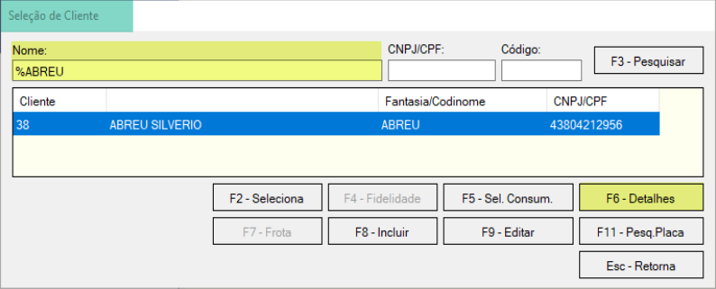No botão F6 - Detalhes verifique se o cliente possui as condições marcadas nos pontos 1 e 2 conforme abaixo.
Se tiver as condições, em seguida pressione o botão F7 - Tipos de Recebimento
para ver os tipos de recebimentos liberados para o cliente.
1. Situação do crédito LIBERADO;
2. Vencimento e Limite de Crédito LIBERADO.
No botão F7 - Tipos de Recebimento veja se está liberado a opção A Prazo e o valor do crédito e a quantidade de transações restantes.
Ao analisar, pressione o botão Esc - Retorna para voltar à tela inicial do cliente e pressione, por fim, o botão F2 - Seleciona.
Depois de verificar toda a situação do crédito do cliente, retorne para a tela de Seleção de Cliente e pressione o botão F2 - Seleciona.
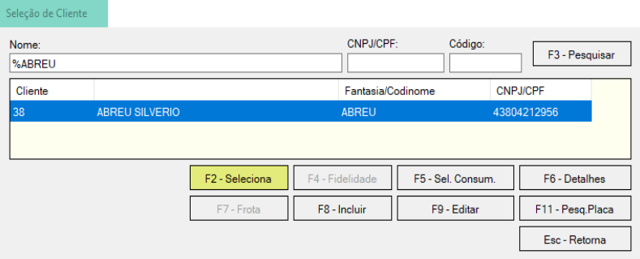Perceba que o cabeçalho do cupom já mudou para o nome do cliente selecionado no tópico 6. Nesta fase você ainda pode trocar o cliente, bastando selecionar novamente o botão F2 - Seleciona
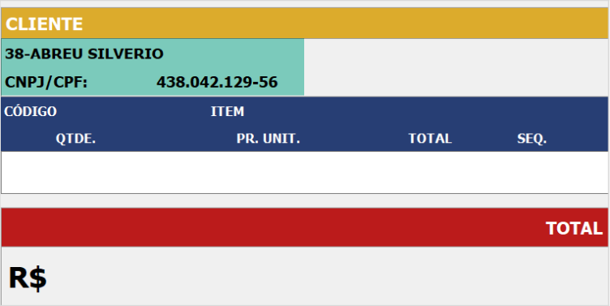Agora na tela de ABASTECIMENTOS ou ITENS e inicie a baixa da venda. Neste exemplo vou
usar um abastecimento, mas a mesma funcionalidade é igual para a baixa de ITENS.
Em
seguida selecione o botão BAIXA (F4).
Após pressionar o botão BAIXA (F4) pode ocorrer de serem mostrados os PROVÁVEIS MOTORISTAS vinculados ao CLIENTE A PRAZO e então escolha o motorista e pressione o botão F2 - Seleciona.
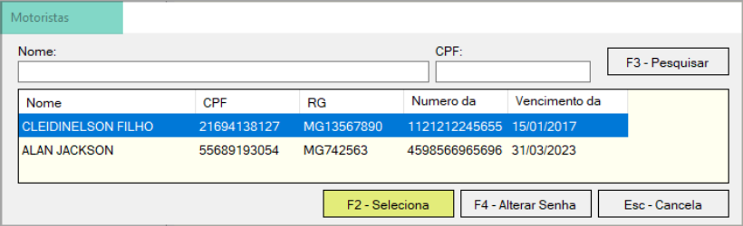Selecione agora o VEÍCULO DO MOTORISTA escolhido anteriormente.
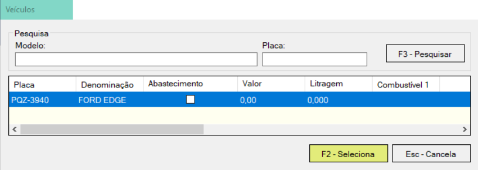Após escolher o cliente, aparece a janela Dados da Venda e nela você pode editar os dados do veículo, tais como Placa, Odômetro, Quilometragem e Motorista para imprimir no Cupom.
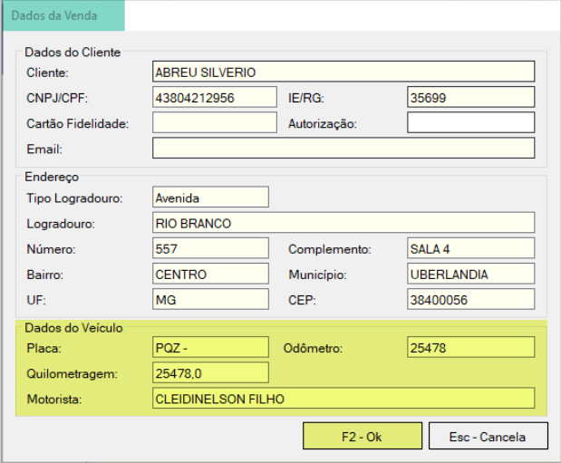O cupom começa a ser totalizado. Aqui você pode incluir mais abastecimentos, itens não combustíveis ou cancelar a venda iniciada.
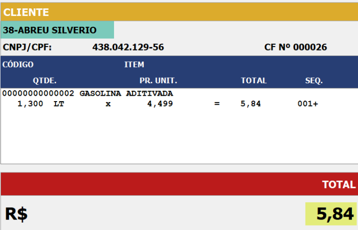Prossiga para o recebimento da venda selecionando o botão RECEBER (F10).
Escolha agora o Tipo de Recebimento A PRAZO (F10) disponível no painel à direita
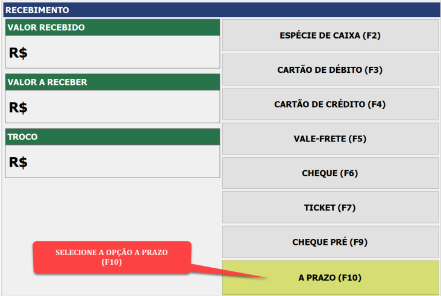Na janela Valor a Receber o sistema mostra o valor a receber e essa forma de recebimento não admite troco. Pressione o botão F2 - OK.
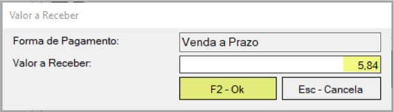Após informar o valor do recebimento o cupom é finalizado mostrando o Tipo de Recebimento A PRAZO.
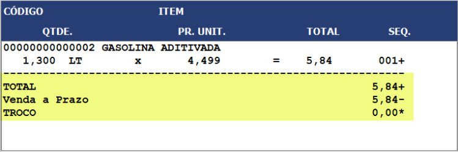